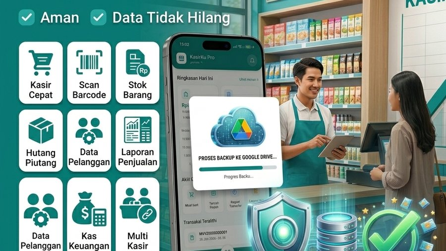

Data toko Anda — transaksi, stok, pelanggan, hutang piutang — tersimpan langsung di perangkat HP. Ini membuat KasirkuPro bisa dipakai sepenuhnya offline, tapi juga berarti data bisa hilang kalau HP rusak, hilang, atau di-reset. Untungnya, fitur Backup membuat data Anda tetap aman tanpa ribet.
Kenapa Backup Itu Penting?
Bayangkan sudah mencatat ratusan transaksi dan data pelanggan selama berbulan-bulan, lalu HP tiba-tiba rusak atau hilang. Tanpa backup, semua data itu ikut hilang. Dengan backup rutin ke Google Drive, Anda bisa memulihkan semuanya hanya dalam beberapa menit di HP baru.
1. Cara Melakukan Backup
- Buka tab Menu di navigasi bawah
- Pilih Pengaturan (khusus akun Admin)
- Ketuk Backup & Restore
- Pilih Backup ke Google Drive
- Login dengan akun Google Anda jika diminta
- Tunggu proses backup selesai — progress akan ditampilkan di layar
Setelah selesai, seluruh data toko (transaksi, stok, pelanggan, hutang, kas) tersimpan aman di Google Drive akun Anda.
2. Cara Restore Data (Pulihkan dari Backup)
Saat Anda ganti HP baru atau perlu mengatur ulang aplikasi, data lama bisa dipulihkan dengan mudah:
- Install KasirkuPro di HP baru
- Buka Menu → Pengaturan → Backup & Restore
- Pilih Restore dari Google Drive
- Login dengan akun Google yang sama saat backup dilakukan
- Pilih file backup yang ingin dipulihkan (biasanya backup terbaru)
- Tunggu proses restore selesai
Setelah restore selesai, semua data — termasuk akun kasir, riwayat transaksi, dan stok produk — akan kembali seperti sebelum HP diganti.
3. Keamanan Data Backup
Data yang di-backup tersimpan di Google Drive akun pribadi Anda, bukan di server pihak ketiga manapun. Hanya Anda yang memiliki akses ke akun Google tersebut yang bisa membuka atau memulihkan data ini.
Koneksi Internet Hanya untuk Backup
Perlu diingat, KasirkuPro dirancang 100% offline untuk operasional sehari-hari — transaksi, cek stok, dan laporan semuanya berjalan tanpa internet. Koneksi internet hanya dibutuhkan saat Anda melakukan backup atau restore ke/dari Google Drive.
Belum pakai KasirkuPro?
Unduh gratis sekarang dan lindungi data toko Anda sejak hari pertama.
⬇ Download Gratis